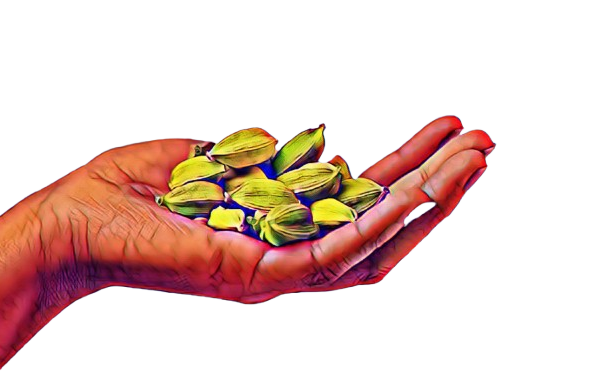

Green
Cardamom
“From the home of green cardamom, the Cardamom hills in Idukki ”

“From the home of green cardamom, the Cardamom hills in Idukki ”
Green cardamom was once a rare forest collectible. As a forest produce, there were many varieties (more than 25 identified) along the cardamom hills tract. Each variety was suitable for particular soil types and climate. When cardamom was domesticated and began its journey as a commercial crop, farmers planted the already existing indigenous varieties in each region. As time passed, their lower yields and increasing demand for cardamom led to newer innovations and experiments, many by the farmers themselves and others by agricultural scientists, resulting in hybrid cardamom varieties solely focused on high yields rather than anything else. Such varieties found rapid acceptance across the cardamom hills and attracted many into cardamom growing as the increased production led to higher incomes. However, this economic viability came at a cost. The high yielding varieties were not suitable for every soil type; they were less adaptable than indigenous ones and were susceptible to pest-attack and diseases.
With newer developments of chemical farming, the farmers in the cardamom hills also sought their solutions in them for a quick fix for the pest attacks and maintain higher yields. Thus began the rapid usage of chemical pesticides and fertilizers throughout the cardamom hills. In addition, with the market standards of size and colour rather than flavour and health benefits becoming prominent, the idea of making bigger, greener cardamom gained attention. And so, growth hormones made their entry into these hills. Today more than 90 percent of cardamom growers use chemical farming to grow their cardamom.
However, these developments were not feasible for the environment. The soil health degraded and plant health slowly deteriorated. And the usage of chemicals was doubled and tripled to maintain yields resulting in an unsustainable path for cardamom ahead. With fertility of soil slowly eroding and indigenous varieties disappearing, the cardamom hills, if continued in their present manner, may become unviable for the very crop they are home to. As a crop that gives millions of people livelihood, the stakes are very high.
Today, in the cardamom hills, finding cardamom that‘s grown chemical-free is a task that few accomplish. And farmers who practice nature-friendly farming have become a rarity, a rarity that our partner farmers are part of. Our farmers took over a decade to find a way back to growing cardamom naturally. It took them several years to find the right varieties, to select stronger plants in their existing cultivation, to rejuvenate their soil and bring back plant health and the thriving bio-diversity in their farms along with maintaining decent yields. Transitioning back to nature-friendly farming although sustainable in the long term is a challenge that many do not prefer as it requires patience, years of search for adaptable varieties, and suffering yield loss for many years while the soil rejuvenates and more than anything, a shift in the mindset.
Despite these challenges, sustainable farming practices are gaining traction. Many farmers and organizations are now working together to promote organic cardamom farming, ensuring that future generations can continue to cultivate this precious spice without harming the environment. By adopting traditional farming techniques, integrating organic composting, and reducing chemical dependency, these pioneers are paving the way for a greener future for cardamom cultivation. Supporting these efforts can help maintain the rich heritage and biodiversity of the Cardamom Hills while also ensuring healthier and more flavorful produce for consumers worldwide.